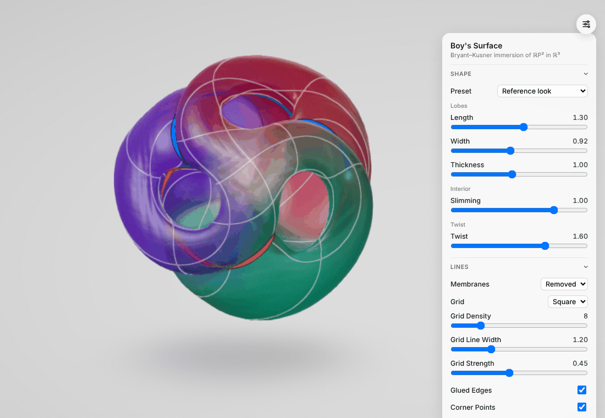
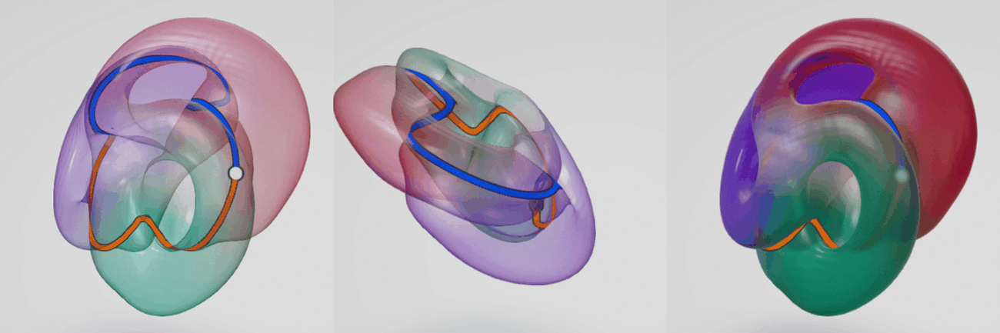
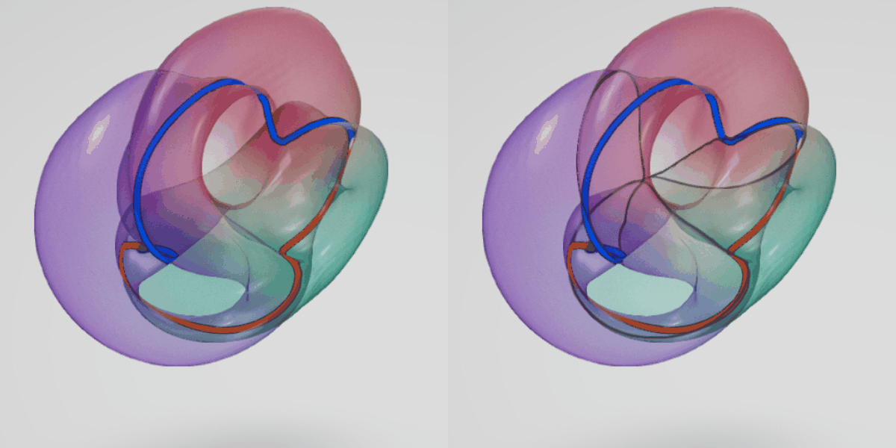
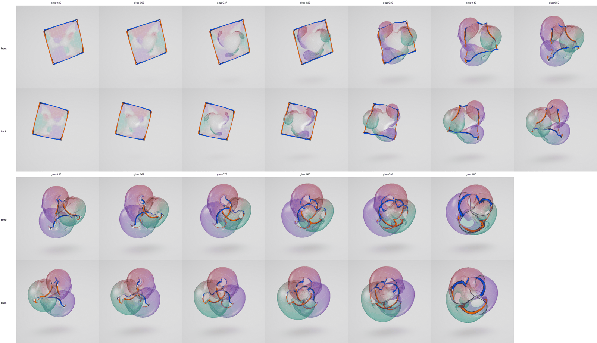
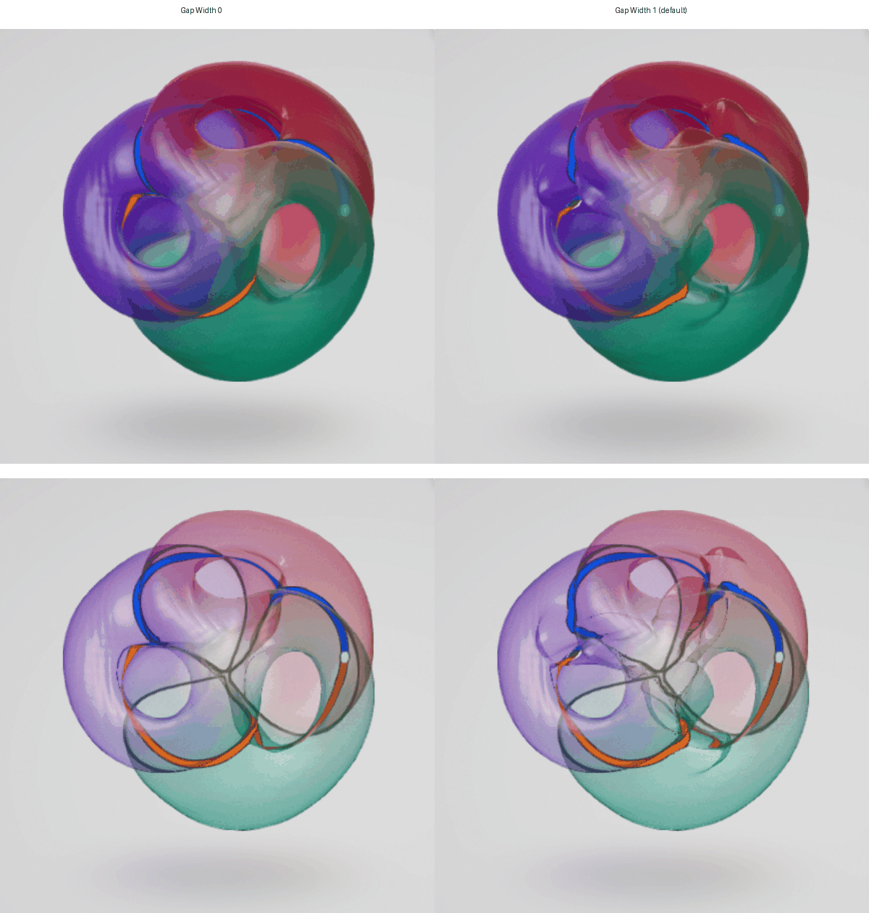
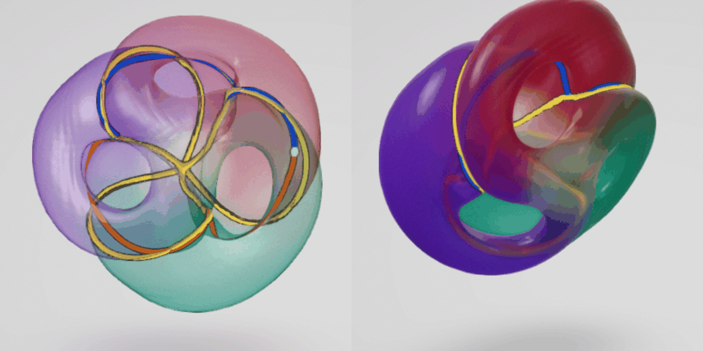

Boy’s surface viewer
An interactive WebGL2 viewer of Boy’s surface, the Bryant–Kusner immersion of the real projective plane ℝP² in ℝ³, rendered as frosted coloured glass.

Open boys-surface-viewer.html
in a browser. It is a single self-contained file with no network access
and no dependencies.
Controls - Drag to rotate. Right-drag, Shift-drag or middle-drag to move the shape around the canvas. - Scroll to zoom. On touch screens, use two fingers to move and pinch to zoom. - Double-click to recentre. H, or the round button at the top right, hides the panel.
Panel - Shape: Glue (with ▶ to play it), presets, lobe length / width / thickness, interior slimming, gap width, twist. - Lines: membranes (see below), square or polar parameter grid, the glued edges of the square, its corner points, and the self-intersection curve with its triple point. - Material: glass opacity, clarity, frost, gloss, rim depth, and the lobe colours. - Scene: spin, spin axis, floor shadow.
The Square grid and the glued edges are the same square, grid and edge colours as the last frame of the square-to-Boy’s-surface sequence. Here they are shown on the finished surface, which you can turn and look through.

Membranes. Each of the three tubes passes through the surface. The usual glass Klein bottle shows its neck passing through a hole in the wall. In the same way, the viewer removes by default the small disc of surface each tube passes through. These discs are bounded by the self-intersection curve, and a dark ring marks the rim of each hole. Set Membranes to Shown to see the complete surface.

Gluing. The Glue slider (or ▶) stretches the flat square into Boy’s surface, continuously, and you can rotate it at any moment. The whole square, its grid, its four edges and its corners are there all along: - The centre of the square bulges into the three lobes. - The edges lift off and wrap round into the slits. - Each orange edge comes alongside the other orange one, and each blue alongside the other blue, until they meet at 1. - Equal slider steps make equally large changes.



Every in-between moment, from any angle, can be rendered with tools/render_gluing.py:
python tools/render_gluing.py # 13 steps, front and back (the image above)
python tools/render_gluing.py --glue 0:1:61 --view front --anim # 61 steps and an animated WebP
python tools/render_gluing.py --glue 0.25,0.3,0.35 # chosen moments
python tools/render_gluing.py --view 30,20 --view -30,200 # any view: tilt,turn in degrees
python tools/render_gluing.py --style glass --set '{"gap": 0}' # the viewer's look, other settingsThe default edges style makes the glass nearly clear, with a faint grid and thick edges and corners.
Gap width. The narrow slits between the tubes and the central area open to about the tubes’ width (Gap Width 1, the default). Set it to 0 for the classic hairline slits.

Self-intersections. Tick Self-Intersections to draw where the surface passes through itself: three loops (gold) that all meet at the triple point (gold disc).

How it works, and why it is built this way: DESIGN.md.
Tools - tools/slimming_field.py
regenerates the page’s embedded slimming field (about two minutes). It
needs numpy and scipy. - tools/gap_field.py
regenerates the page’s embedded gap map (about eight minutes). It needs
numpy and scipy. - tools/membranes.py
regenerates the page’s embedded membrane and curve data. It needs numpy
and scipy. - tools/fold_check.py confirms
that no setting of the shape sliders folds the surface. It needs numpy
and scipy. - tools/render_gluing.py
renders the gluing at any glue values and view angles (frames, strip,
animated WebP). It needs playwright and pillow. - tools/check_viewer.py runs
26 browser checks headless. It needs playwright, pillow and numpy.